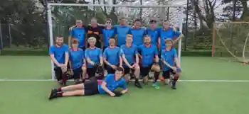
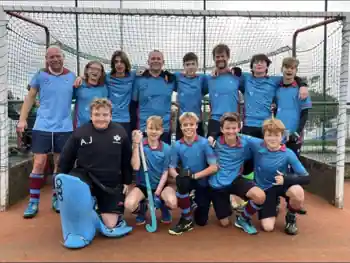
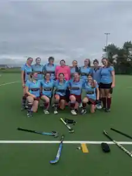
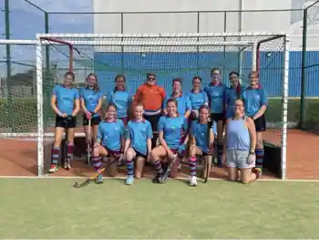

Bude • North Cornwall
Hockey for everyone.
Senior, development and junior hockey in Bude. Find upcoming fixtures, recent results, team pages, club sponsors and ways to support match days.

Weekly sessions
Training Times
Training at Budehaven Astro Turf Pitch, Stratton Road, Bude EX23 8AW.
Monday · 6–7pmJunior Training — U8s, U10s & U12s
Wednesday · 7–8pmU14 Girls and above & Ladies
Wednesday · 8–9pmU14 Boys and above & Men
England Hockey
Next Games
Upcoming league fixtures for Bude's four senior sides.
Home pitch
what3words: ///tomato.paper.pirates ↗After-match teas
what3words: ///storyline.insert.cares ↗Updating fixtures…
England Hockey
Latest Results
The most recent completed game for each Bude senior team.
Loading the latest results from England Hockey…
Play at Bude
Our Teams
Senior, development and junior hockey.

Bude Men's 2nd Team
Men's Piran Division 3
Development squad information, fixtures and sponsor recognition.
Team page →

Ladies Development
Women's Trelawney Division 3
Development squad information, fixtures and sponsor recognition.
Team page →
Club news
Latest from Bude Hockey Club
Match reports, club announcements, junior updates and other news from around the club.
Match reports
Latest match news
Recent senior and junior match reports can be published here alongside results and photos.
Stories to be addedClub updates
Announcements
Training changes, player news, awards and important club updates.
Updates to be addedJuniors
Junior news
Tournament reports, development news and junior achievements.
Junior section →Club gallery
Photos from Bude Hockey Club
Team photos, match days, junior hockey, social events and club moments.
More match-day and club photos can be added as the club supplies them.
Beyond match day
Socials, Fundraising & Events
Club socials, fundraising activity and community events all in one place.
Club Socials
End-of-season events, team socials and other club get-togethers.
Upcoming dates to be addedFundraising
Fundraising events, club campaigns and ways members and supporters can help.
Events to be addedCommunity Events
Open days, junior activities, awards, tournaments and community appearances.
Events to be addedSupporting the club
Our Sponsors
Thank you to the local businesses helping hockey grow in Bude.
JENNINGS
& COMPANY
& COMPANY
Jennings & Company
Chartered Certified Accountants & Chartered Tax Advisers.
Rob's Travel Taxis
Bude taxis, airport transfers and long-distance travel.

Streets Metherell Gard
Chartered accountants and business advisers in Bude.

Adventure International Bude
Outdoor and coastal activity centre in Bude.

The Brendon Arms
Long-established family-run inn overlooking Bude harbour.
Club information
More from Bude Hockey Club
Committee contacts, club policies, safeguarding and development opportunities.
Committee & CoachesMeet the committee and coaching team →
Constitution, Policies & SafetyClub documents plus England Hockey safeguarding and conduct links →
Coaching & Umpiring TrainingCurrent England Hockey courses and development links →
Junior HockeyAge groups, tournaments and junior information →
Contact Bude Hockey Club
Join, sponsor or get involved
For playing enquiries, junior hockey, club information or sponsorship opportunities, contact the club directly.
General Club Enquiriesbudehockey@gmail.com
Bude Hockey Club on social media
Keep up with fixtures, results, photos, events and club news.